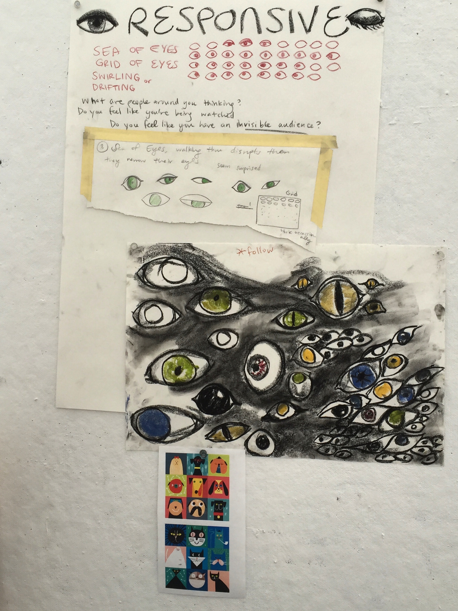
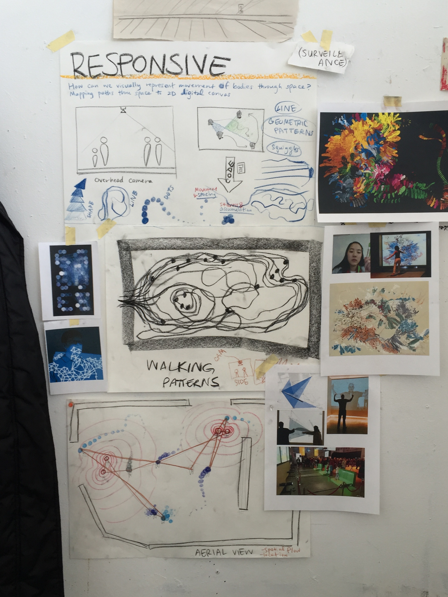
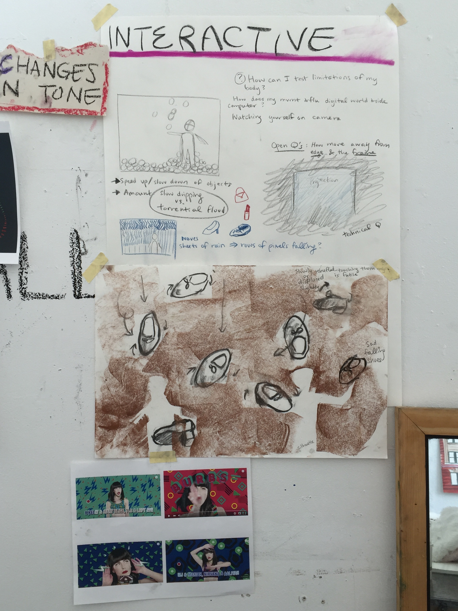
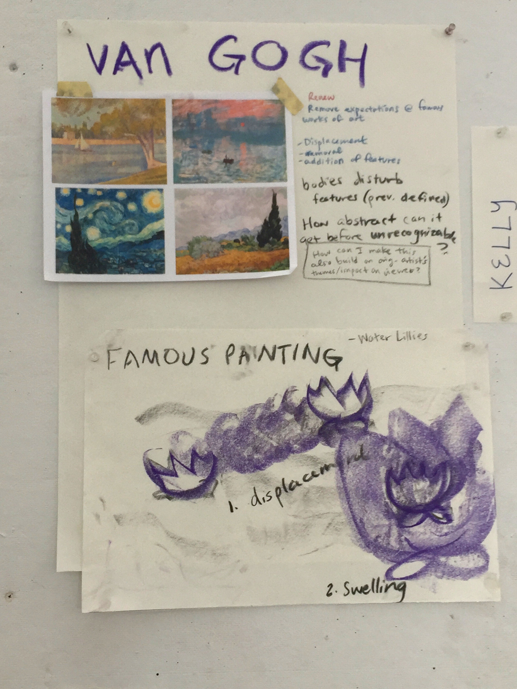
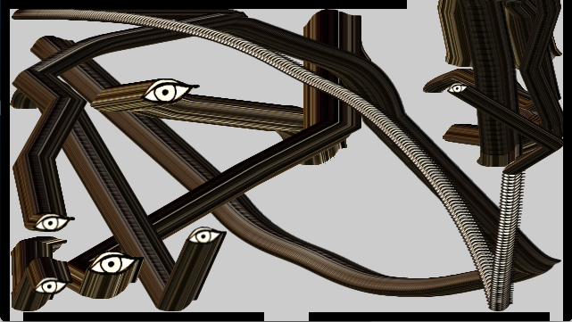
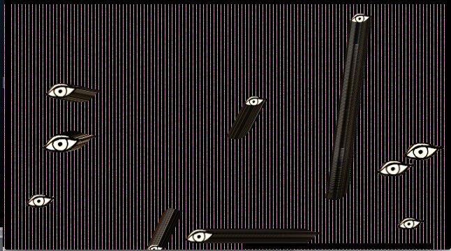
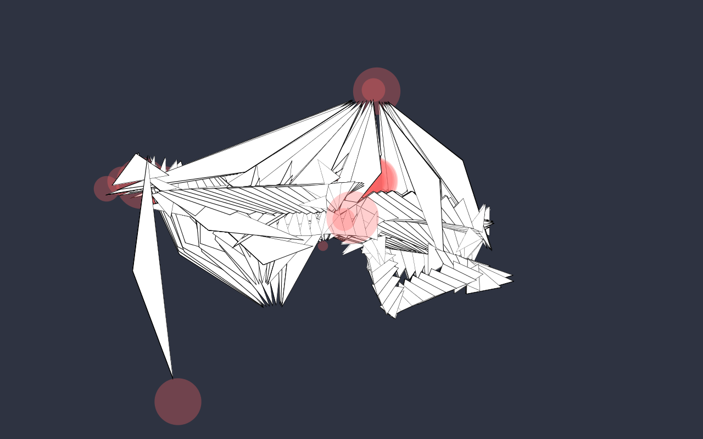
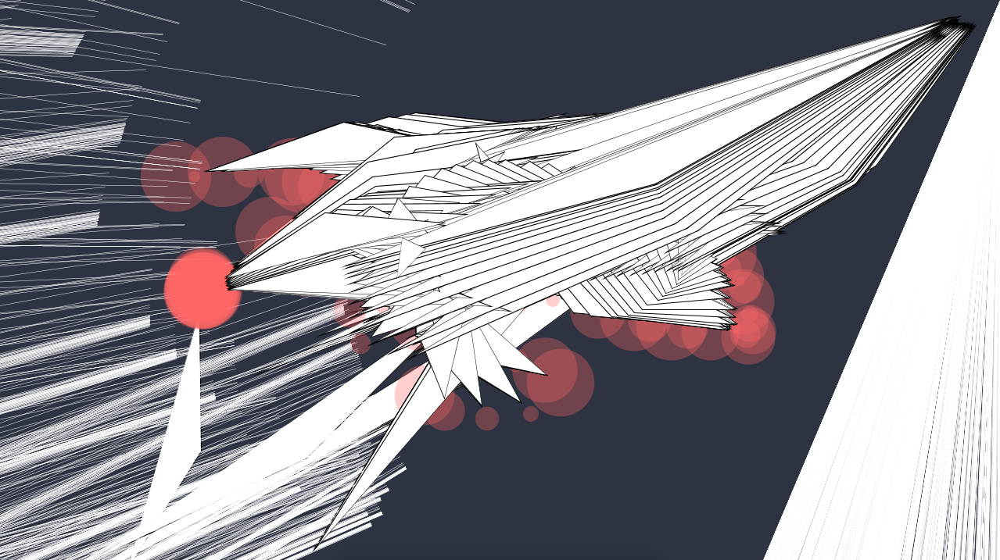
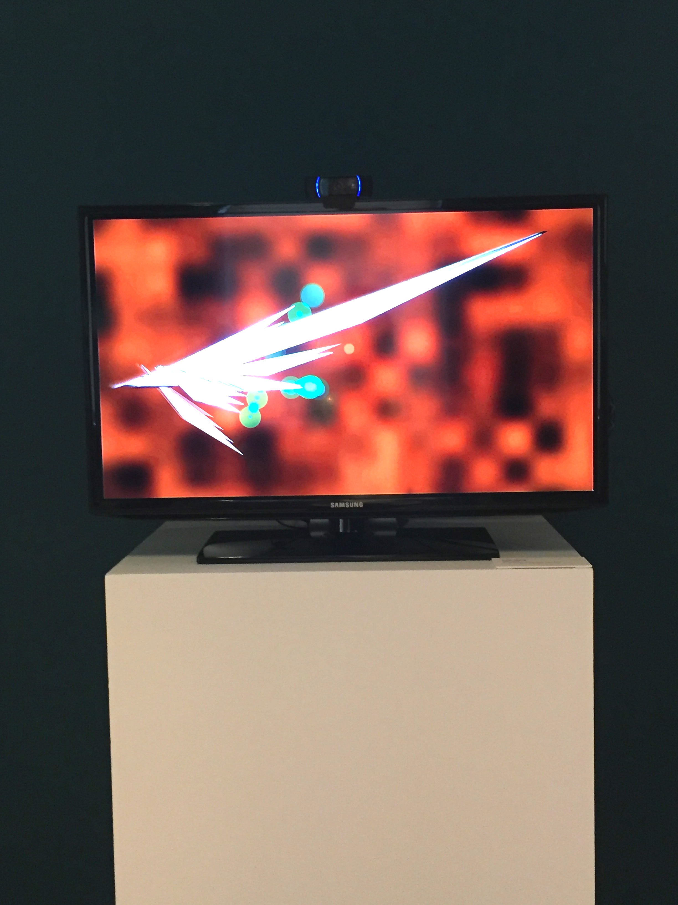
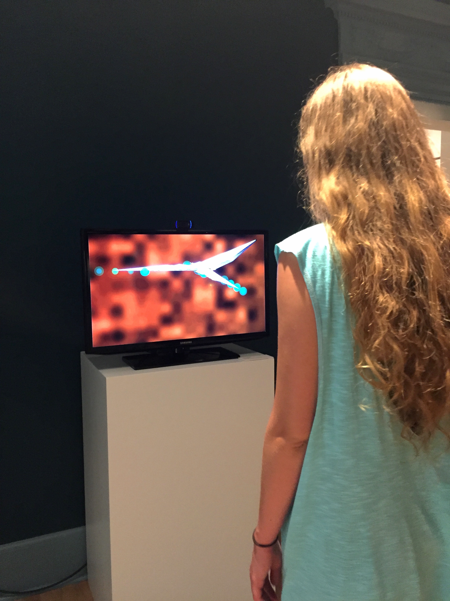

See the source code on Github
Brainstorming Process:
Drawing inspiration from the work of Camille Utterback and Theodore Watson, and Petros Vrellis' interactive Starry Night app.




I started out with some early sketches to work out the facial recognition and tracking. I experimented with reactive pattern-making and different abstract shapes and colors:




I was increasingly drawn to the overlapping, abstract shapes and the assertive, sharp edges of the triangles. As people move laterally through the space in front of the screen, the long, blade-like triangles lance across the screen towards the found faces (denoted by the green circles).

